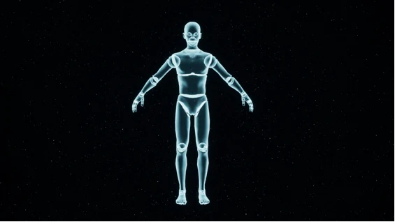
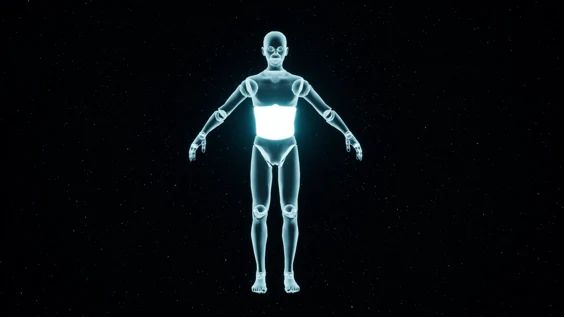

02 · Visual Anchor
Trataka keeps the task externally visual.
A candle provides a stable visual object of meditation, making gaze behavior directly interpretable as part of the interaction.
Eye-Controlled Interaction as Attentional Scaffolding: Designing Closed-Loop Attention Support in VR Mindfulness Meditation.
When the user looks away from the intended meditation anchor for long enough, the system provides a visual cue that helps bring attention back. The feedback is deliberately lightweight: there is no score, no reward, and no attempt to turn mindfulness into a performance task.


A candle provides a stable visual object of meditation, making gaze behavior directly interpretable as part of the interaction.
Momentary glances are treated as normal. The system intervenes only after attention has remained away from the anchor long enough to indicate likely drift.
Attention is no longer directed toward a single external object. Comparing Body Scan with Trataka tests whether the same eye-controlled support behaves differently across meditation anchors.
Highlighted body regions indicate where attention should move next while the experiment still separates anchor design from eye-controlled feedback.
The design deliberately avoids constant correction. Feedback timing is part of the research question because excessive intervention can undermine the mindfulness task itself.
Move the pointer away from the meditation anchor and remain there. The delayed cue illustrates the closed-loop logic without turning the experience into a scoring task.
The study combines state anxiety, state mindfulness, NASA-TLX workload, behavioral interaction data, and resting-state fNIRS.
The related blue–green-space study removes gaze-triggered feedback and instead changes the visual composition of the environment. It compares perceived restoration, anxiety change, and prefrontal resting-state activity across virtual nature conditions.
Open related studySeveral VR mindfulness conditions produced meaningful reductions in state anxiety relative to the control condition.
Mind-focused mindfulness gains differed by attentional anchor, so visual and body-focused guidance should not be treated as interchangeable.
Temporal demand, perceived performance, and frustration were associated with anxiety change, reinforcing the need for lightweight feedback.